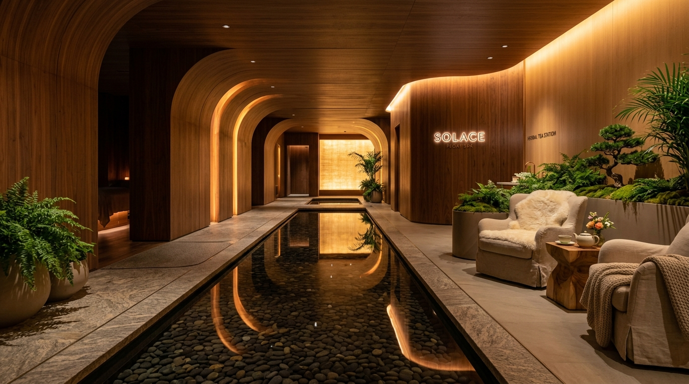
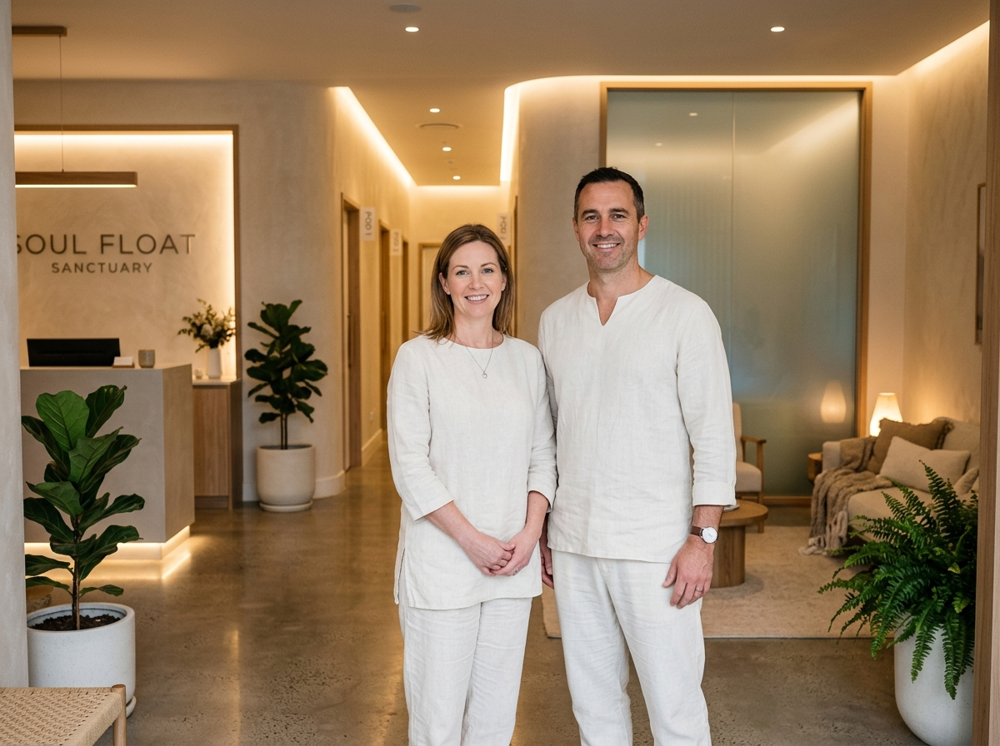

Reclaiming Stillness in an Overstimulated Society
In our modern everyday lives, the human nervous system is under unceasing demand. Artificial blue light, digital notifications, urban acoustic clutter, and the constant downward drag of gravity create persistent low-grade stress and chronic musculoskeletal tension.
Solace was founded on a simple yet profound realization: when you subtract the external sensory barrage and remove gravitational pressure from the spine, the human body and consciousness possess an innate, extraordinary capacity to repair and rebalance.
"Floating isn't about escaping reality — it is about stripping away the friction so you can finally return to your clearest, most grounded self."
— Elena Vance & Marcus Sterling, Founders
Our Uncompromising Hygiene Promise
Our water purification and sanitation protocols exceed municipal swimming pools and medical recovery centers.
1,000 Lbs Pure USP Salt
High salinity creates a natural saline environment where pathogenic bacteria and microbes simply cannot survive.
100% Water Turnover
Between every single guest, 100% of the suite water is cycled 3 to 5 times through multi-stage commercial filtration systems.
Dual UV-C & Ozone Disinfection
High-intensity germicidal UV-C light combined with dissolved active ozone neutralizes 99.9% of organics and micro-particles.
Exact 93.5°F Thermal Match
Digital micro-controllers continuously balance water to 93.5°F so you never feel too hot or cold during your journey.
Acoustic Soundproofing
Double-insulated architectural sound chambers and silicone earplugs ensure complete acoustic quietude from external noise.
HEPA Fresh Air Inflow
Whisper-quiet hospital HEPA ventilation pumps purified fresh air continuously into every private suite chamber.

Meet the Visionaries Behind Solace
Elena Vance, a certified clinical hydrotherapist and former athletic physiologist, discovered sensory deprivation after recovering from severe spinal disc trauma. Marcus Sterling, an architectural acoustics engineer and water sanitation director, engineered our silent sound-isolated suites.
Together, they designed Solace from the ground up: prioritizing spacious, claustrophobia-free environments, medical-grade water purification, and a personalized guest orientation that puts first-timers immediately at ease.
Elena Vance & Marcus Sterling
Founders & Sanctuary DirectorsDedicated Sanctuary Guides
Compassionate guides supporting every step of your sensory rest journey

Elena Vance
Founder & Hydrotherapy Specialist

Marcus Sterling
Co-Founder & Water Director

Priya Patel
Mindfulness & Breathwork Guide

Dr. Sarah Jenkins
Neurobiology & Recovery Advisor
Milestones in Sensory Well-Being
From our first pod prototype to becoming the region's premier sensory deprivation sanctuary
Sanctuary Founded
Opened our doors with three custom zero-gravity sensory pods, establishing hospital-level water turnover standards.
Horizon Open Pools
Introduced expansive open-basin float pools, allowing guests with claustrophobia concerns to enjoy zero-gravity healing.
Holistic Health Award
Named "Best Recovery Sanctuary" by the Holistic Health Guild, recognized for innovation in neurological rest.
15,000 Floats & Sauna
Surpassed 15,000 float sessions guided and introduced synergistic full-spectrum infrared contrast rituals.
Everything You Need to Know About Floating
Common questions about safety, comfort, and the float experience at Solace
What if I am prone to claustrophobia or anxiety?
How is the float water cleaned between sessions?
Can I float if I don't know how to swim?
What should I bring for my session?
What happens if I fall asleep while floating?
Ready to Experience Pure Gravity-Free Solace?
Book your introductory 60-minute sensory float session today for just $79, or explore our flexible monthly wellness memberships.